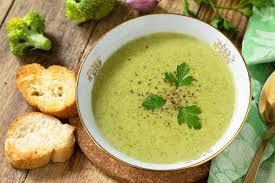
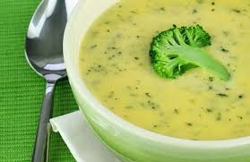

Una buena alimentación es esencial para nuestra salud, pues solo así tendremos la energía suficiente para hacer todo lo que nos proponemos. Es por esto que debemos realizar las cuatro comidas del día, aunque no siempre sea sencillo elegir lo que queremos comer o nos falte el tiempo. La cocina casera es sinónimo de autenticidad, naturalidad y, en muchos casos, sencillez y rapidez en su elaboración. Aquí tienes 10 propuestas diferentes para que tus comidas sean siempre un éxito

1.Crema de brócoli y patata con beicon
Nos gusta tener siempre brócoli en casa. Es saludable, versátil en la cocina y un ingrediente ¡que nos encanta! Lo convertimos en una apetecible crema con patata y beicon. ¡Más casero imposible!



Paso a Paso
Ingredientes:
- 400 gramos de brócoli congelado
- 200 gramos de patata
- 1 litro de caldo de verduras
- aceite de oliva virgen extra
- sal
- pimienta
- hierbas aromáticas
Preparación:
- Pon una olla con agua y sal al fuego y cuando hierva, añade el brócoli congelado y cuece durante 5 minutos, escurre y reserva.
- Pela las patatas, trocéalas y cuécelas en el caldo de verduras durante 20 minutos.
- Añade el brócoli y tritura dejando algunos trozos enteros de los dos vegetales.
- Prueba de sal y de pimienta y rectifica a tu gusto.
- Corta el beicon en trocitos y dóralo en una sartén sin nada de grasa.
- Sirve la crema con el beicon, añade la hierba aromática que más te guste ¡y listo!
Tabla 1: Información Nutricional por 100 gramos (aprox.)
El brócoli es un vegetal nutritivo con diversos beneficios para la salud. A continuación, se presentan algunas tablas con información nutricional y propiedades del brócoli:
| Nutriente | Cantidad |
|---|---|
| Calorías | 34 kcal |
| Proteínas | 2.8 g |
| Grasas | 0.4 g |
| Fibra | 2.6 g |
| Vitamina C | 89.2 mg |
| Vitamina K | 101.6 mcg |
En que podemos mejorar la receta
Escribenos un comentario de como podriamos mejorar la receta o como lo haces tú".